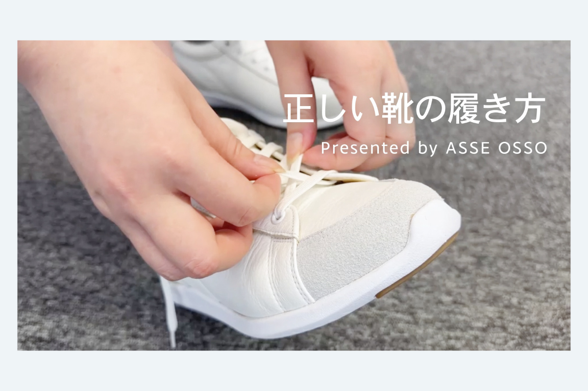
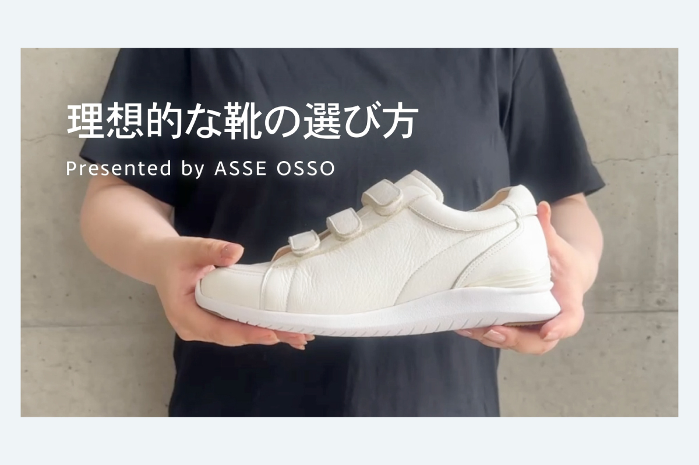

正しい靴の履き方動画・理想的な靴の選び方動画

▶
...

| 制作期間 | 2026年8月 |
| 制作時間 | 3日 |
| 依頼元 | ASSE OSSO |
| 媒体 | 動画 |
| 使用アプリ | Adobe Express |
制作背景・意図
ASSE OSSOからオーソティクスの納品リーフレットに掲載したいとの依頼で制作しました。全てiPhoneで撮影、編集は今回初めて長尺をAdobe Expressで実施。ナレーションも収録し、テロップを表示。カメラアングルを切り替えて順序をわかりやすく、停止・間なども意識し、矢印なども挿入して編集しました。
理想的な靴の履き方では、NG例にCopilotやAdobe Fireflyを活用。競合他社のスニーカーをNGとして比較で出さないが、視聴者にNGをわかりやすく伝えるための絵を入れ込むことができました。